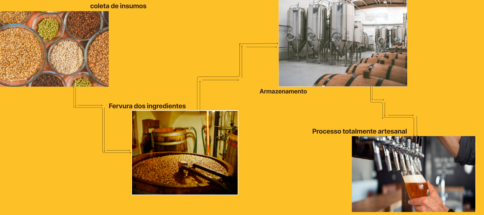

Sobre Nós

Processo de feitura da nossa cerveja 100% artesanal presendo sempre a melhor experiencia do cliente
Processo de feitura da nossa cerveja 100% artesanal presendo sempre a melhor experiencia do cliente
As Pale Ale são cervejas com maior concentração de lúpulo de amargor, por isso são mais amargas do que as Lagers, por exemplo.
Outra característica desse estilo é sua coloração mais clara.
Porter é uma cerveja escura, fabricada no Reino Unido que tem um leve sabor amargo e um elevado teor de ácido carbónico.
As características das cervejas Scotch Ale são notas de caramelo no aroma e no sabor. A sua coloração varia do cobre ao marrom bem escuro.